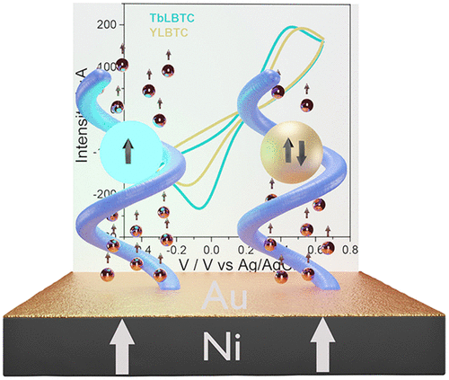
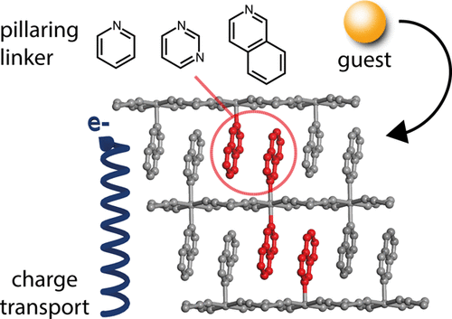

Hi! I am Garin, Mechatronic Engineer and Researcher focused on electronic engineer who has developed different tools to measure electrical properties on molecular materials.
I am one of the rare cases in which a mechatronic tries to enroll to research field instead of the industry.
In my free time I like to read and learn about scientific developments, engineering, videogames, mechatronic, web develping and cooking.
A interesting data, I am 0 seconds of live.
Publications
Reinforced Room-Temperature Spin Filtering in Chiral Paramagnetic Metallopeptides

Chirality-induced spin selectivity (CISS), whereby helical molecules polarize the spin of electrical current, is an intriguing effect with potential applications in nanospintronics. In this nascent field, the study of the CISS effect using paramagnetic chiral molecules, which could introduce another degree of freedom in controlling the spin transport, remains so far unexplored. To address this challenge, herein we propose the use of self-assembled monolayers (SAMs) of helical lanthanide-binding peptides. To elucidate the effect of the paramagnetic nuclei, monolayers of the peptide coordinating paramagnetic or diamagnetic ions are prepared. By means of spin-dependent electrochemistry, the CISS effect is demonstrated by cyclic voltammetry and electrochemical impedance measurements for both samples. Additionally, an implementation of the standard liquid-metal drop electron transport setup has been carried out, and this process helped to demonstrate the peptides’ suitability for solid-state devices. Remarkably, the inclusion of a paramagnetic center in the peptide increases the spin polarization as was independently proved by different techniques. These findings permit the inclusion of magnetic biomolecules in the CISS field and pave the way to their implementation in a new generation of (bio)spintronic nanodevices.
Ultrathin Films of 2D Hofmann-Type Coordination Polymers: Influence of Pillaring Linkers on Structural Flexibility and Vertical Charge Transport

Searching for novel materials and controlling their nanostructuration into electronic devices is a challenging task ahead of chemists and chemical engineers. Even more so when this new application requires an exquisite control over the morphology, crystallinity, roughness, and orientation of the films produced. In this context, it is of critical importance to analyze the influence of the chemical composition of perspective materials on their properties at the nanoscale. We report the fabrication of ultrathin films (thickness < 30 nm) of a family of FeII Hofmann-like coordination polymers (CPs) by using an optimized liquid-phase epitaxy (LPE) set up. The series [Fe(L)2{Pt(CN)4}] (L = pyridine, pyrimidine, and isoquinoline) conform an ideal platform for correlating the effect of the axial nitrogenated ligand with changes to their structural response to guests or electrical resistance. All film properties relevant to device integration have been thoroughly analyzed with complementary surface techniques for a meaningful comparison. Our results reveal that changes to this ligand can hinder the structural transformation triggered by the absorption of guest molecules previously reported for the pyridine phase. Also important, it can substantially hinder vertical charge transport across the layers, even at the ultrathin film limit.
Origin of the Chemiresistive Response of Ultrathin Films of Conductive Metal–Organic Frameworks
Conductive metal–organic frameworks are opening new perspectives for the use of these porous materials for applications traditionally limited to more classical inorganic materials, such as their integration into electronic devices. This has enabled the development of chemiresistive sensors capable of transducing the presence of specific guests into an electrical response with good selectivity and sensitivity. By combining experimental data with computational modelling, a possible origin for the underlying mechanism of this phenomenon in ultrathin films (ca. 30 nm) of Cu‐CAT‐1 is described.
Bottom‐Up Fabrication of Semiconductive Metal–Organic Framework Ultrathin Films
Though generally considered insulating, recent progress on the discovery of conductive porous metal–organic frameworks (MOFs) offers new opportunities for their integration as electroactive components in electronic devices. Compared to classical semiconductors, these metal–organic hybrids combine the crystallinity of inorganic materials with easier chemical functionalization and processability. Still, future development depends on the ability to produce high‐quality films with fine control over their orientation, crystallinity, homogeneity, and thickness. Here self‐assembled monolayer substrate modification and bottom‐up techniques are used to produce preferentially oriented, ultrathin, conductive films of Cu‐CAT‐1. The approach permits to fabricate and study the electrical response of MOF‐based devices incorporating the thinnest MOF film reported thus far (10 nm thick).